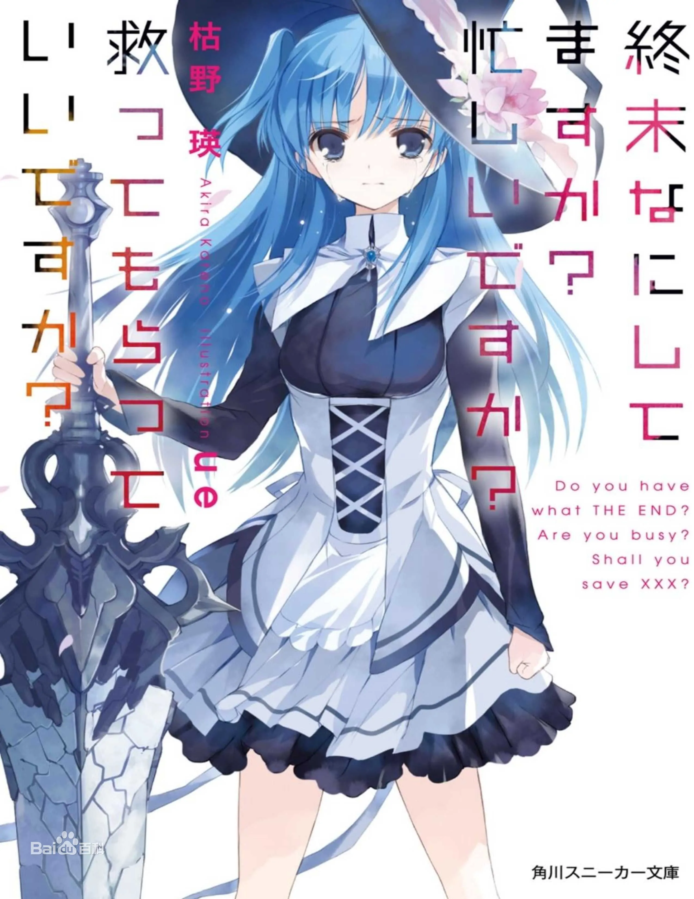

播放次数 5 次

简介
“人类”遭到非比寻常的“兽”蹂躏而灭亡了。
除了独自从数百年沉眠中苏醒的青年威廉以外。
唯有“圣剑”与使用圣剑的妖精兵能代替“人类”打倒“兽”。
战斗过后，“圣剑”能再次被他人使用，但用尽力量的妖精兵们却会殒命。
“至少，我也希望自己不用消失，也想让别人记住。我也想留下羁绊啊。”
这是注定赴死的妖精少女们和青年教官共度的，既短暂又灿烂的日子。
时光荏苒，两人竟再没见过，虽然在人海中一直搜寻彼此的身影，但似乎总
是徒然。再后来，他们分别有了各自的生活，只是还偶尔会梦到13岁时的这段青
涩而美好的感情，才明白当年怎么也说不出口的那个字就是爱。